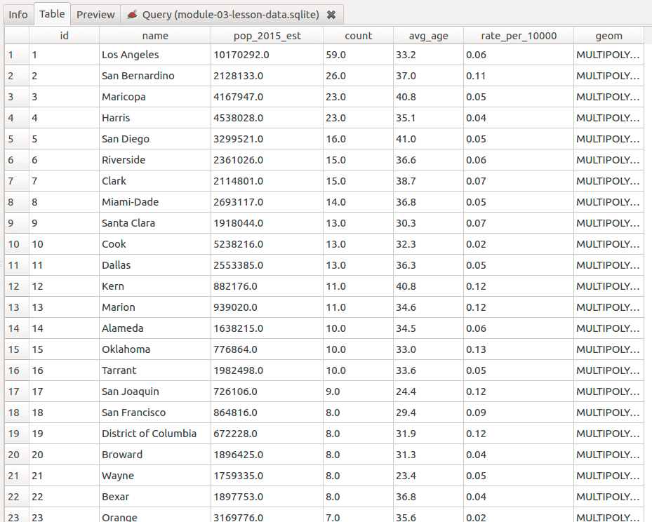

Figure 05: Geocode settings
In this lesson, we're going to create a county-level choropleth map of law enforcement related deaths using publicly available data from the US Census and Fatal Encounters.
The available CSV data has no coordinates that we could use to map these incidents, but it does have an address attributes that we could use to locate their position. The process of adding coordinates to records using attributes is called geocoding. We'll do geocoding using a popular plugin, MMQGIS.
After we have a point layer of incidents, we will count the number per county. From this measure, we can easily divide by population to derive a rate incidents per population. In our bigger cities, we would expect more incidents, but which city has the highest rate per population? This analysis is called by a few names, e.g., "point in polygon" analysis, "spatial join," and just simply "intersect." We'll do this analysis with SQL in a spatial database and also show the tool that QGIS offers to complete similar analysis.
Inspect the fatal_encounters_victims-160718.zip file, which contains a .csv file, the tabular data, and a .csvt, a file that defines the data type of each column. The plugin we're using for geocoding only accepts the .csv file for input.
Let's add the .csv to QGIS by selecting from the QGIS's main menu Layer > Add Layer > Add Delimited Text Layer... As we pursue this course of adding/modifying/exporting data in QGIS, compare the procedure to what we have done with SQL. First, notice that there's no geometry in this file, it is only delimited text. Here is is a screen capture of the import dialog:
Figure 01: QGIS offers many options to clean your delimited text files on import
Though this data shows specific places, it isn't mappable because it doesn't contain geometry coordinates. Geocoding takes an address and returns a coordinate point. Reverse geocoding, does the opposite, taking a coordinate point and returning an address.
We need first to consider the quantity of data we will be geocoding. Online geocoders limit how many addresses you request in a given period. The Google Maps API, for instance, limits users to 2,500 requests in a 24-hour period. Other geocoders will let you make unlimited requests, but limit how many you can make in one pass. The US Census's geocoder will only accept 1000 addresses in a batch, but you can run unlimited batches. To accommodate these limitations, we're going to use just 2015 records.
Let's use a Filter function to reduce the 9,773 records we geocode. From our past two lessons, we should recognize this feature as an SQL query builder. Right-click the layer in the Layers Panel and select Filter... Let's select only incidents reported in 2015.
Make the Query Builder expression like this:
Figure 02: Extracting records by attribute with Query Builder and SQL
Open the attribute table by right-clicking the layer and selecting Open Attribute Table. Verify you only have records for 2015. The record count should be 1261 incidents. Next, right-click the layer and Save As... a new .csv file called fatal_encounters_victims-12015.csv. Make the CRS is NAD83 (EPSG: 4269), and the CREATE_CSVT option is set to "Yes." Your window should look like the following:
Figure 03: Saving a new .csv file containing only 2015 incidents and with correct field data types
Now you're ready to geocode!
There are two general ways that geocoders work:
There are lots of geocoding tools available online and each has their unique advantages and limitations. Geocoding is big business, and the best geocoders cost money to use, unfortunately.
Some of the common tools are:
To get a better idea of the differences, we're going to geocode our 2015 data using two different geocoders.
Let's get our first plugin for QGIS! One of the remarkable features of Q is the fervor and diversity of plugin development. Many of the tools we commonly use in QGIS started out as a plugin. We're going to install the MMQGIS plugin via QGIS's Plugin Manager. Find it the QGIS menu Plugins > Manage and Install Plugins...* Then, search for "MMQGIS" and install it:
Figure 04: Install MMQGIS plugin
After a successful install, find the new tools in QGIS's main menu entry, MMQGIS. We have a couple of options for geocoding our data, we can use either the Google Maps API, OpenStreetMaps (OSM) Nominative, or if we have it, street centerline data with address block number. We're going to use the Google and OpenStreetMap options.
We'll use the OpenStreetMap Nomative tool first. Click on MMQGIS in the top menu bar and select Geocode from Google Maps/OpenStreetMaps. In the dialog box that opens up, browse to the 2015 dataset. Make sure that the correct fields were selected for the address, city and state fields. We didn't have a country field, so that should be blank. You'll want to add "OSM" to the end of the automatically created shapefile name so that we know that this is the output from the OSM geocoder. You'll also need to click the browse button for the not found output. Name the file "notfound_2015_OSM.csv" and tell QGIS where to save that file. Finally, click OK.
Figure 05: Geocode settings
Now, we wait. No, really. Make yourself a cup of coffee, maybe brush up on a foreign language. Geocoding can be a slow process. This is going to take some time. QGIS might look like it has frozen in time, but it should be creating a new Shapefile (the only output format for this tool). Inspect the folder you saved the Shapefile. If you notice the .dbf file size increasing, QGIS is crunching away!
Once the tool finishes, you'll see a slew of tiny dots all across the US and if you check your file manager, you'll see you've got a new Shapefile and a new CSV file. The Shapefile contains the point data for all the addresses that the geocoder found, while the CSV is a list of addresses it did not.
Now repeat the process using the Google Map geocoder. Add "GM" to the end of the shapefile and the not found file names, so you'll be able to identify them later. The Google Maps API maxes out at 5 seconds per address request, and you've just asked it to geocode a whole bunch of them. So, maybe some more coffee?
TIP! Please note that if you're using the Google geocoder you have a daily limit per IP address. If you want to continue to use Google geocoder, try a different computer (on a different network) or work in small batches while you experiment in the beginning.
Why didn't it match all of them?
The Google tool results:
Figure 06: Image of sample geocoded addresses from Google geocoder shows 1239 out 1261 matches, 98%.
Now the OSM tool results:
Figure 07: Image of sample geocoded addresses from OSM geocoder shows 512 out 1261 matches, 41%.
It is pretty clear that we got different results from the two geocoders. Google Maps returned a lot more results than OpenStreetMap. Why is that?
The accuracy of your geocoding results depend on the quality of the locator dataset it's using for interpolation. OpenStreetMap is a crowdsourced map with has holes in its coverage because there are some places that nobody in the crowd has decided to spend a lot of time mapping yet. However, OpenStreetMap's data improves and expands on a daily basis, and depending on the specific location that you're mapping, you may get better or worse results. Even though OSM didn't return as many results as Google Maps, there are reasons to use OSM over Google Maps. OSM doesn't have the 2,500 addresses per 24-hour period limit that Google Maps has, and its data is under a Creative Commons license which means you have more rights related to its use than that of Google Maps.
Inspect the attributes; you'll notice that there are two new fields, addrtype and addrlocat. These columns give you an idea of the accuracy of the geocoder's results.
If we look at our notfound files, we can get an idea of what kind of addresses trip up the geocoders. The notfound file is your opportunity to search for mistakes in the original record, correct them and potentially run them through the geocoder again.
Make another .csv address tables, perhaps of your favorite taco bars and cupcake bakeries. Compare the results of areas you know and decide which geocode tool fits your needs.
OK, let's visualize our data. Add your layers into a new QGIS document and project your Map Canvas to EPSG: 102008:
Figure 08: Visualizing our geocoded data
It becomes apparent that making sense of 1239 points on a map is an iterative process. We will discover some analysis techniques in the following sections that aggregate these points by different units of geography, e.g. county polygons. For now, let's investigate some methods for symbolizing features available in QGIS.
Let's use QGIS's Layering rendering techniques to build up symbol density. These visual effects are unique among GIS mapping apps and more similar to graphic design apps like Photoshop. Blending modes determine how overlapping layers and features mix. The default Normal mode with 0% transparency; the layer and feature are entirely opaque. We can independently modify the transparency of the outline and fill of a symbol object.
We can change the blending mode for an entire layer and individual features in a layer. Let's change the Feature blending mode to Addition, the effect of which QGIS defines as, "This blend mode simply adds pixel values of one item with the other. In case of values above one (in the case of RGB), white is displayed. This mode is suitable for highlighting features." Experiment with various combinations and see how we can locate areas with a high density of points.
Figure 109: Feature blending modes to highlight symbol density
Continue experimenting with different blending modes and transparency settings. Take note of how feature blending modes differ from layer blending modes. Play with changing a symbol's fill and line opacity. The goal is to develop a visual hierarchy in your map's presentation; the map's topic is the most important visual element while supporting layers fade into the background. Consult the UK's Ordinance Survey about the 10 principles of cartographic design.
To start with let's create a new spatial database. From your Lab 02, use DB Manager to export/import layers for this project, especially in regards to making your table join permanent. Consult the last section in Lesson 02 for a refresher.
After you have your project space setup, you should have the following in your database, i.e., note the attributes for the county polygon table:
Figure 10: Set up your database with the layers needed in this analysis
In our previous lessons, we've been creating layers 'on the fly' with SQL queries. The idea is that we keep a master spatial database that we select out features and attributes and create symbology as need them. This gives us the opportunity to make unlimited maps while not duplicating data nor gobbling up more disk space.
At some point, we might find that our queries slow redraw time for layers in Map Canvas. When our SQL becomes too complex, too expensive to use efficiently, we can render our views or virtual layers to new tables. We will create new data requiring more disk storage space, but it will be much more responsive in QGIS.
Let's suggest some guidance and help you perform analysis with a minimal headache.
The general workflow for spatial analysis in a database is to:
As we create new layers, let's observe some data hygiene rules:
OK, let's add the best-geocoded dataset to our database with two modifications from our previous imports into SpatiaLite: make the Target SRID "4269", which is the NAD83, and format our table name as we just outlined.
Figure 11: Import and project layer on import to spatial database
Before we start executing SQL, let's find example statements we can use during the lesson. If you haven't changed table names, you should be able to copy these statements and paste them into DB Manager.
We already have a lot attributes that we can analyze in our data before we geocoded it. We can answer questions like, "which state, city, or zip code have the most?" Depending on the attributes available, we can use SQL group by statement and count() function to aggregate and count records by an attribute value.
Let's access our records:
/* Get all columns and records */
select
*
from
fatal_encounters_victims_2015
Now we want to count the number of non-NULL records in the fields st and id:
/* Count records that are not NULL */
select
st, count(st) as count_of_states_not_null, count(id)
from
fatal_encounters_victims_2015
It looks like we have one record without a state value. The id field is the unique identifier that is given to every record by default and is never null.
Add the group by statement and choose the field you wish to aggregate. For example, the following the statement can be interpreted as, for each unique occurrence in st, count the number of records that are not null. In other GIS apps, this statement is similar to a "dissolve" or "summary statistics." The following SQL counts the number of incidents in each state:
/* Count incidents in each state and rank them high to low */
select
st, count(st) as count
from
fatal_encounters_victims_2015
group by
st
order by
count desc
You should have a similar output as below:
Figure 12: Counting incidents by state
Any field that has a class value can be aggregated and counted. The gender breakdown of incidents:
/* Count by gender */
select
gender, count(gender) as count
from
fatal_encounters_victims_2015
group by
gender
order by
count desc
We can add columns that compare counts to total (non-null records we derived earlier) by adding calculated measures:
/* Count incidents by ethnicity and calculate percent of total */
select
ethnicity, count(ethnicity) as count, round((count(ethnicity)/1238.0),4)*100 as percent_total
from
fatal_encounters_victims_2015
group by
ethnicity
order by
count desc
If we have numeric fields, we can add statistical functions to out output columns. We have a field for the age of the victim. Let's find the average age with the avg() function:
/* Average age of victim */
select
count(age) as count, avg(age)
from
fatal_encounters_victims_2015
As you can see in the count, we have a few more null fields than in other fields. Now, let's add the min() and max() functions. Be aware of the alphanumeric fields with only numbers, because some of these functions can work text strings. Execute this statement and examine its output:
/* Average age of victim and min/max? */
select
count(age) as count, avg(age), min(age), max(age)
from
fatal_encounters_victims_2015
This gives inaccurate results because the fields have been converted to text by the geocoding tool. We can add the cast() function to cast our text fields to numeric:
/* Find min, max, and average age */
select
count(age) as count,
avg(age) as average_age,
min(cast(age as real)) as minimim_age,
max(cast(age as real)) as maximum_age
from
fatal_encounters_victims_2015
Let's finish by showing the possibility for more detailed analysis by grouping multiple attributes with statistical functions and then render the query off to our new database:
/* Group incidents by state and gender */
select
gender, st as state,
count(gender) as count,
round(avg(age),1) as average_age
from
fatal_encounters_victims_2015
group by
gender, st
order by
st
The output will give us the average age of victims by state and gender, e.g., California had 21 female victims with an average age of 34.1, while the same state had 212 male victims and was on average slightly older at 34.3.
Now Create a view and use the naming convention discussed earlier. A view is a stored query. To render the query to a new table and database, either Export the view or click+drag the view from the source database to the render database:
Figure 13: Moving a table view to a new database
It is apparent that heavily populated states have more incidents. We should normalize the incidents by total population. As shown in the last lesson, we could do an attribute join with a table that has the population as an attribute. We could join by state or zip code because we have those uniquely identified in our table.
However, what if we wanted to count these incidents by county or city? Let's explore a method that analyzing locations by spatial proximity to another layer.
In the last lesson, we joined attributes from different tables based on a field of shared values. In this section, we'll join attributes from different layers based on shared locations of their features. We'll do a "point in polygon" or "many to one" spatial join that will count the number points from one layer that are within polygons of another layer.
This analysis is easy to imagine for our lesson; we have locations of incidents and we want to count the number in each county polygon. We might also want to find the average age of the victim. Since our attribute table doesn't offer information about which county the incident occurred (just state and zip code), we have to use the spatial join to analyze patterns at smaller units of geography.
QGIS has wrapped this type of analysis into a nice tool. We won't have the same type of control over attributes, but it does run a little faster. First, make sure you have the point and polygon layers in your Layers Panel. QGIS tools use these layers for selecting input. Find the tool in QGIS menu > Vector > Data Management Tools > Join attributes by location.
The tool settings are almost identical to our spatial join SQL query. The main difference is that we can't select the attributes we want in the output and need to select Take summary of intersection features in the Attribute summary parameter. This allows for the "many-to-one" type spatial join. The tool settings should be:
Figure 14: Join attributes by location tool
Let's discuss some considerations using this tool. If the join is doing summary statistics, the numeric fields cannot have NULL values. Since the geocoder made all attributes as TEXT data type, this tool also won't change data types "on the fly". So, as always, we need to be aware of our attributes before using this tool and convert them if necessary.
Depending on the format to which we output, we could change our column names. If you don't specify a name in the Joined layer output (leaving "Create temporary layer") you shouldn't have any field name changes. That's the preferred method.
If you add a name for the output, it defaults to Shapefile format and truncates our long column names. If you select to save output as a SpatiaLite table..., you'll need to select the database and add the name in the table="my_table_name" text:
Figure 15: Join attributes by location tool
As you can see, the tool provides convenience but lacks many of the options we find in our SQL method. I would encourage focusing on SQL more than the QGIS tools. Eventually, we will be in CARTO, which uses PostGIS. Get in the habit of saving successful SQL queries as text files and reusing on different databases and datasets.
Spatial joins in QGIS, SpatiaLite, and PostGIS use the GEOS library to determine spatial proximity between features. The various ways to determine spatial proximity, i.e., if two features overlap, are listed in SpatiaLite's documentation. One of the more common functions to test for spatial relationships (often called geometric predicates) is st_intersects() and is defined, "if a geometry or geography shares any portion of space then they intersect. For geography -- tolerance is 0.00001 meters (so any points that are close are considered to intersect)." We'll continue to aggregate and summarize attributes using the group by statement.
There is a difference this week between PostGIS and SpatiaLite. The group by statement in PostGIS is more restrictive than in SpatiaLite, but PostGIS is more efficient. The steps are covered in the PostGIS SQL example starting at line 139.
Let's create our first spatial join query:
/* Spatial join to count incidents by county */
select
county_population_estimates_2015.name,
county_population_estimates_2015.POP_ESTIMATE_2015,
count(fatal_encounters_victims_2015.id) as count
from
/* Target layer with enumeration units */
county_population_estimates_2015
join
/* Source layer that will be counted/analyzed */
fatal_encounters_victims_2015
on
/* Geometric predicate intersect */
st_intersects(county_population_estimates_2015.geom,fatal_encounters_victims_2015.geom)
where
/* Use where clause to subset for Kentucky. First two digits in geoid indicate state. */
county_population_estimates_2015.geoid like '21%'
group by
/* Aggregate attribute */
county_population_estimates_2015.geoid
order by
count desc
Kentucky has 120 counties, but only 15 are returned with this query. Like the attribute join, the default join is an inner join where the output table contains only matching records. If we want all counties in the output table, regardless if they have incidents or not, we need to use the left outer join:
/* Spatial join to count occurrences by county */
select
county_population_estimates_2015.name,
county_population_estimates_2015.POP_ESTIMATE_2015,
count(fatal_encounters_victims_2015.id) as count
from
/* Target layer with enumeration units, the left table*/
county_population_estimates_2015
left outer join
/* Source layer that will be counted/analyzed, the right table */
fatal_encounters_victims_2015
on
/* Geometric predicate intersect */ st_intersects(county_population_estimates_2015.geom,fatal_encounters_victims_2015.geom)
where
/* Use where clause to subset for Kentucky. First two digits in geoid indicate state. */
county_population_estimates_2015.geoid like '21%'
group by
/* Aggregate attribute */
county_population_estimates_2015.geoid
order by
count desc
Now let's add some statistics to our output table. We have the age of the victim for each incident so that we can find the average age for each county. We can also add a column to normalize our raw count of incidents:
/* Spatial join to count incidents by county */
select
county_population_estimates_2015.name,
county_population_estimates_2015.POP_ESTIMATE_2015,
count(fatal_encounters_victims_2015.id) as count,
/* Find average age. Since attribute is text, use cast() function to make a real numeric data type. Note that the field name 'age' is unique between tables and don't need to preface with table name.*/
round(avg(cast(age as real)),1) as avg_age,
/* Normalize by county population */
round((count(cast(age as real))/county_population_estimates_2015.POP_ESTIMATE_2015*10000),2) as rate_per_10000
from
/* Target layer with enumeration units */
county_population_estimates_2015
join
/* Source layer that will be counted/analyzed */
fatal_encounters_victims_2015
on
/* Geometric predicate intersect */
st_intersects(county_population_estimates_2015.geom,fatal_encounters_victims_2015.geom)
where
/* Use where clause to subset for Kentucky. First two digits in geoid indicate state. */
county_population_estimates_2015.geoid like '21%'
group by
/* Aggregate attribute */
county_population_estimates_2015.geoid
order by
count desc
Your output should look like the following:
Figure 16: Output for spatial join query
When you work with complex spatial queries, like this join, you'll soon discover that they require a lot of time to redraw. When you have a good statement, you can create a table from the statement's output. If you are working in a PostGIS database, we use a little different approach with the create table statement. You find those steps in the PostGIS SQL document starting at line 139.
The following method works in both types of databases. We'll need to render our query to a new table for more efficient use using the SQL insert into statement.
First, create a new table via the DB Manager menu > Table > Create Table dialog. In the resulting dialog give field names, data types, an id field, and the correct geometry type and EPSG: 4269. Make sure you make fields nullable in case you get null outputs, which could cause the SQL insert statement to fail.
Figure 17: Create Table to receive spatial join output
After creating the table, open the table's Info tab (you might need to reconnect) and copy the field names in the order presented. The insert into statement uses the order of field names for adding data:
Figure 18: Table column names and datatypes
Let's build the first part of our query. We need to start with the insert statement and add the list fields:
insert into
incidents_by_county
(
name,
pop_2015_est,
count,
avg_age,
rate_per_10000,
geom
)
The SQL that follows is pretty much the same as we have executed in the last step with one important distinction. The order of the select columns must match the order of the field names listed after the insert statement. The id column is skipped since it is autogenerated during the insert. Also, let's do an inner join and remove the where clause to finish our statement:
/* Spatial join to count incidents by county */
Insert into incidents_by_county
(name,
pop_2015_est,
count,
avg_age,
rate_per_10000,
geom)
select
county_population_estimates_2015.name as name,
county_population_estimates_2015.POP_ESTIMATE_2015 as pop_2015_est,
count(fatal_encounters_victims_2015.id) as count,
/* Find average age. Since attribute is text, use cast() function to make a real numeric data type. Note that the field name 'age' is unique between tables and don't need to preface with table name.*/
round(avg(cast(age as real)),1) as avg_age,
/* Normalize by county population */
round((count(cast(age as real))/county_population_estimates_2015.POP_ESTIMATE_2015*10000),2) as rate_per_10000,
county_population_estimates_2015.geom as geom
from
/* Target layer with enumeration units */
county_population_estimates_2015
join
/* Source layer that will be counted/analyzed */
fatal_encounters_victims_2015
on
/* Geometric predicate intersect */
st_intersects(county_population_estimates_2015.geom,fatal_encounters_victims_2015.geom)
group by
/* Aggregate attribute */
county_population_estimates_2015.geoid
order by
count desc
After you Execute the query, it might take awhile to complete. That's one reason we did the inner join to help limit the number of records processed. It will also help with classification and symbology. Inspect your output and should see the following table:

Figure 19: Table output from spatial join
As you might discover, both you and QGIS will make mistakes. If you need to delete records from a table because an insert or create table didn't of go as expected, then use the following:
/* Delete all records from a table */
delete from incidents_by_county
If you get output that doesn't make sense, you might need to restart DB Manager or even QGIS. I have noticed that the group by functions sometimes don't work after an insert fails. Restarting QGIS fixes the issue. These errors seem more of a SpatiaLite/QGIS connection. In the more robust PostGIS platform, these SQL statements run much better.
To finish our analysis, we want to add the newly joined data to our render database or new schema, which holds only our unique analysis output. While this isn't always necessary, it's a good practice for managing and sharing data you've created. In your DB Manager, drag the successful output to your new database or schema. You'll be prompted with an import layer dialog:
Figure 20: Copy tables to other databases
The last thing for us to do is to symbolize our data in some thematic way. The choropleth map is a good choice for this since our data is aggregated to county polygons.
Let's symbolize the incidents_by_county layer for our final map. First, put the map in the EPSG:102008 equal-area projection. Right-click on the incidents_by_county layer and go to Properties. Select Style, then change the symbology to "Graduated", choose Count as the Column, set the Mode to Natural Breaks (Jenks) and then click Classify. You should now see five classes defined in the center of the dialog box. You'll need to correct the legend as you have in previous modules being sure to adjust the color and labels as needed.
Figure 21: Raw count per county
Since we did the inner join we will not have all counties to symbolize; we have holes in our data. To visually balance the missing counties, we will need a layer underneath the incidents_by_county. I added a second layer of the state polygons and styled it without an outline, Style > Single Symbol > Simple fill > Outline style > No pen and labeled it, "Counties without incidents."
Another useful symbology technique is to remove (or diminish) outlines on our graduated county polygons, which can sometimes obscure smaller counties. After you set the graduated fill colors the way you like them, click Symbol: Change... and change the outline settings. This will change the symbols for all classes. If you change the fill color, you'll lose your graduated color scheme!
Figure 22: Changing symbol properties for all classes
Of course, we spent time making a normalized column for these incidents, so let's finally visualize the results:
Figure 23: Rate per 10,000 population
What explains the difference in these two maps? The raw count is biased towards high population counties; more people more incidents. The rate per population could identify those counties with abnormally high and low incidents. This map is also susceptible to over-representing counties with low populations, though.
In the previous two lessons we've shown how to use DB Manager to create tables and edit new columns. It is a handy to start with an empty, since DB Manager limits your options to acceptable parameters.
Let's first take a look at how we created a table with DB Manager:
Figure 24: Create Table in DB Manager
Notice the required fields "Name", "Type", and "NULL" (can the field contain null values?). Now, let's take a look at how we would make the same table:
/************ Step 1 ************/
/* Create a new table without geometry column */
create table incidences_by_county
(
id integer not null primary key,
name text null,
pop_2015_est real null,
count real null,
avg_age real null,
rate_per_10000 real null
)
Inside the parentheses we list the columns separated by commas with following sequence of parameters: "Name of column", "Data type", and "Is it nullable". The exception is that the id column contains the primary key parameter which makes this field the auto incrementing unique identifier for each record.
Our new table has no geometry. Since SpatiaLite is an extension to SQLite, we need to execute another statement to add our geom column using the AddGeometryColumn() function:
/************ Step 2 ************/
/* Add empty geometry column */
select
AddGeometryColumn('incidences_by_county', 'geom', 4269, 'multipolygon', 'xy')
-- PostGIS: AddGeometryColumn('incidences_by_county', 'geom', 4269, 'multipolygon', 2)
The sequence of parameters in the AddGeometryColumn() function is:
"Name of table", "Name of column", "SRID", "Geometry type", and "dimensions".
After these two steps in SQL, you should have an identical table you made earlier in the lesson to insert the output of a spatial join.
However, in PostGIS we can use the CREATE TABLE ... AS statement that automatically creates a table from a SELECT statement.
st_intersects() function documentation